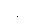

Burst Trigger Source
In the triggered burst mode, the function generator outputs a burst with the specified number of cycles (burst count) each time a trigger is received. After the specified number of cycles have been output, the function generator stops and waits for the next trigger. At power-on, the internally-triggered burst mode is enabled.
· Burst trigger source: Internal, External, or Manual. The default is Internal.
· When the Internal (immediate) source is selected, the frequency at which the burst is generated is determined by the burst period.
· When the External source is selected, the function generator will accept a hardware trigger applied to the rear-panel Trig In connector. The function generator outputs the specified number of cycles each time Trig In receives a TTL pulse with the specified polarity. External trigger signals that occur during a burst are ignored.
· When the Manual source is selected, the function generator outputs one burst each time the front-panelkey is pressed.
· When the External or Manual trigger source is selected, the burst count and burst phase remain in effect but the burst period is ignored.
· You can insert a time delay between the receipt of the trigger and the start of the burst waveform (used in triggered burst mode only).
· Front-Panel Operation: Press the Trigger Setup softkey and then select the desired source by pressing the Source softkey.
To insert a trigger delay, press the Delay softkey (used in the triggered burst mode only).
To specify whether the function generator triggers on the rising or falling edge of the signal on the Trig In connector, press the Trigger Setup softkey. Then select the desired edge by pressing the Slope softkey.
·
Remote Interface Operation:
TRIGger:SOURce {IMMediate|EXTernal|BUS}
Use the following command to insert a trigger delay.
TRIGger:DELay {<seconds>|MINimum|MAXimum}
Use the following command to specify whether the function generator triggers on the rising or falling edge of the
Trig In connector.
TRIGger:SLOPe {POSitive|NEGative}
See "Triggering" on page 98 for more information on triggering.